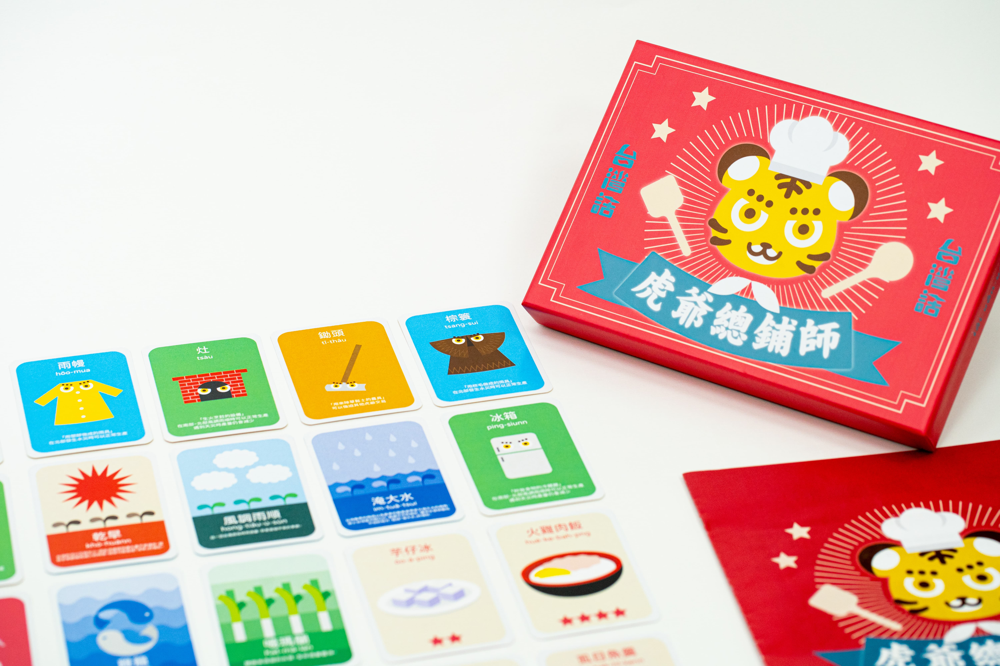

<div class="container-fluid">
  <div class="row">
    <div class="col-9 p-5 mx-auto">
      <h1>Who are we?</h1>
      <p>We are Tâi-uân-uē, a group composed of university graduate school students. Experts pointed out that Taiwanese Hokkien is at risk of being endangered in thirty years. As a result, in 2019, Taiwan's legislative body passed the Development of National Languages Act, recognizing the country's multicultural identity and encouraging the development of national languages. However, discrimination against Taiwanese and a lack of instructors have made revitalizing the language difficult. Hence, we organized a society called Tâi-Uân-Uē (meaning Taiwanese in Taiwanese), designing a Taiwanese board game to improve children's daily Taiwanese conversation skills. Our goal is to help elementary school students learn and speak Taiwanese Hokkien in a funnier and easier way, and build awareness about the education of the native tongue in Taiwan. You may refer to the attached file for further information on our project. </p>
      
      <h2>Learning more about us</h2>
      
      <div class="ratio ratio-16x9" style="padding-top: 1em; padding-bottom: 1em;">
        <iframe src="https://www.youtube.com/embed/kJtucWin-VA" title="YouTube video player" frameborder="0" allow="accelerometer; autoplay; clipboard-write; encrypted-media; gyroscope; picture-in-picture" allowfullscreen></iframe>
        
       <h1>Taiwanese board game: Hoo-ia Tsong-phoo-sai (Tiger God Master Chef)</h1>
       
         
</div>
</div>
      
      
      
    </div>
  </div>
</div>
    
    
